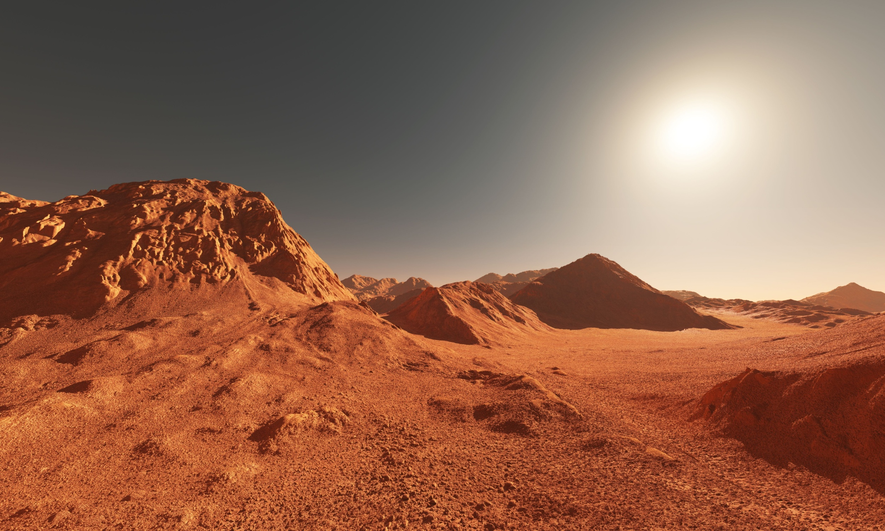

What is Mars?
Welcome to Mars: the red planet that's fourth from the sun! After continuous research from rovers and astronauts, Mars is the first planet made completely habitable for human living. A day on Mars lasts 24.6 hours, and a year lasts 687 Earth days. Expect longer season times due to its axial tilt and elliptical orbital path around the sun.
Activities Available
- Visit Mars' two moons Phobos and Deimos through Space Tours
- Tour Mars' largest volcano Olympus Mons
- Take your family to Martian Water Park
Lodging Offered
- Martian Igloos Inn: $75 per night
- Phobos Resort: $105 per night
- Deimos Lodges: $85 per night
Reviews
"Felt right at home! I went to tour Olympus Mons and the tour guide was so passionate about it! Definitiely coming back next year!"- John Roland
"Really loved the Martian Igloos Inn! I have a family of five and the activities offered were enough to satisfy my husband, two teenagers, and toddler!"- Susan Anderson
"I decided to retire here with my wife. The scenery is beautiful and the staff at the Phobos Resort are wonderful! I wish they had more activities though."- George Bowen